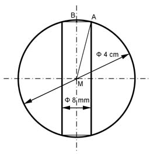

Aufgabe 380 Ein kugelförmiges Schiebegewicht mit einer Dichte von 7,2 g/cm³ und einem Durchmesser von 4 cm gleitet auf einer Stange von 8 mm Durchmesser. Wie groß ist seine Masse m, wenn es mittig aufgebohrt wurde?  V = Kugelvolumen VKugel - Zylindervolumen Z - 2 * Kugelabschnitt VA d³ * л 4³ cm³ * л VKugel = --------- = ------------- = 33,5 cm³ 6 6 Satz von Pythagoras im Dreieck MAB: MB = hZylinder MA = r = d/2 = 4 cm/2 = 2 cm BA = 8 mm/2 = 4 mm = 0,4 cm MA² = MB² + BA² | -BA² MB² = MA² - BA² MB² = 2² cm² - 0,4² cm² = 3,84 cm² |√ MB = 1,96 cm Z = BA² * л * (2 * MB) = 0,4² cm² * л * 1,96 cm = 1,97 cm³ Höhe hKugelabschnitt = 2 cm - 1,96 cm = 0,04 cm л 2 * VA = 2 * --- * hKugelabschnitt² * (3 * rKugel - hKugelabschnitt) 3 л 2 * VA = 2 * --- * 0,04² * (3 * 2 - 0,04) cm³ = 0,02 cm³ 3 V = 33,5 cm³ - 1,97 cm³ - 0,02 cm³ = 31,51 cm³ m = V * р = 31,51 cm³ * 7,2 g/cm³ = 227 g